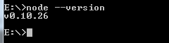

Node.js安装
Node.js 安装配置
本章节我们将向大家介绍在 Windows 和 Linux 上安装 Node.js 的方法。
本安装教程以 Node.js v4.4.3 LTS(长期支持版本)版本为例。
Node.js 安装包及源码下载地址为：https://nodejs.org/en/download/。

你可以根据不同平台系统选择你需要的 Node.js 安装包。
Node.js 历史版本下载地址：https://nodejs.org/dist/
注意：Linux 上安装 Node.js 需要安装 Python 2.6 或 2.7 ，不建议安装 Python 3.0 以上版本。
Windows 上安装 Node.js
你可以采用以下两种方式来安装。
1、Windows 安装包(.msi)

本文实例以 v0.10.26 版本为例，其他版本类似， 安装步骤：
步骤 1 : 双击下载后的安装包 v0.10.26，如下所示：

步骤 2 : 点击以上的Run(运行)，将出现如下界面：

步骤 3 : 勾选接受协议选项，点击 next（下一步） 按钮 :

步骤 4 : Node.js默认安装目录为 "C:\Program Files\nodejs\" , 你可以修改目录，并点击 next（下一步）：

步骤 5 : 点击树形图标来选择你需要的安装模式 , 然后点击下一步 next（下一步）

步骤 6 :点击 Install（安装） 开始安装Node.js。你也可以点击 Back（返回）来修改先前的配置。 然后并点击 next（下一步）：

安装过程：

点击 Finish（完成）按钮退出安装向导。

检测PATH环境变量是否配置了Node.js，点击开始=》运行=》输入"cmd" => 输入命令"path"，输出如下结果：
PATH=C:\oraclexe\app\oracle\product\10.2.0\server\bin;C:\Windows\system32;
C:\Windows;C:\Windows\System32\Wbem;C:\Windows\System32\WindowsPowerShell\v1.0\;
c:\python32\python;C:\MinGW\bin;C:\Program Files\GTK2-Runtime\lib;
C:\Program Files\MySQL\MySQL Server 5.5\bin;C:\Program Files\nodejs\;
C:\Users\rg\AppData\Roaming\npm
我们可以看到环境变量中已经包含了C:\Program Files\nodejs\
检查Node.js版本

2、Windows 二进制文件 (.exe)安装
32 位安装包下载地址 : http://nodejs.org/dist/v0.10.26/node.exe
64 位安装包下载地址 : http://nodejs.org/dist/v0.10.26/x64/node.exe
安装步骤
步骤 1 : 双击下载的安装包 Node.exe ，将出现如下界面 :

点击 Run（运行）按钮将出现命令行窗口：

版本测试
进入 node.exe 所在的目录，如下所示：

如果你获得以上输出结果，说明你已经成功安装了Node.js。
Linux 上安装 Node.js
直接使用已编译好的包
Node 官网已经把 linux 下载版本更改为已编译好的版本了，我们可以直接下载解压后使用：
# wget https://nodejs.org/dist/v10.9.0/node-v10.9.0-linux-x64.tar.xz // 下载
# tar xf node-v10.9.0-linux-x64.tar.xz // 解压
# cd node-v10.9.0-linux-x64/ // 进入解压目录
# ./bin/node -v // 执行node命令 查看版本
v10.9.0
解压文件的 bin 目录底下包含了 node、npm 等命令，我们可以使用 ln 命令来设置软连接：
ln -s /usr/software/nodejs/bin/npm /usr/local/bin/
ln -s /usr/software/nodejs/bin/node /usr/local/bin/
Ubuntu 源码安装 Node.js
以下部分我们将介绍在 Ubuntu Linux 下使用源码安装 Node.js 。 其他的 Linux 系统，如 Centos 等类似如下安装步骤。
在 Github 上获取 Node.js 源码：
$ sudo git clone https://github.com/nodejs/node.git
Cloning into 'node'...
修改目录权限：
$ sudo chmod -R 755 node
使用 ./configure 创建编译文件，并按照：
$ cd node
$ sudo ./configure
$ sudo make
$ sudo make install
查看 node 版本：
$ node --version
v0.10.25
Ubuntu apt-get命令安装
命令格式如下：
sudo apt-get install nodejs
sudo apt-get install npm
CentOS 下源码安装 Node.js
1、下载源码，你需要在https://nodejs.org/en/download/下载最新的Nodejs版本，本文以v0.10.24为例:
cd /usr/local/src/
wget http://nodejs.org/dist/v0.10.24/node-v0.10.24.tar.gz
2、解压源码
tar zxvf node-v0.10.24.tar.gz
3、 编译安装
cd node-v0.10.24
./configure --prefix=/usr/local/node/0.10.24
make
make install
4、 配置NODE_HOME，进入profile编辑环境变量
vim /etc/profile
设置 nodejs 环境变量，在 export PATH USER LOGNAME MAIL HOSTNAME HISTSIZE HISTCONTROL 一行的上面添加如下内容:
#set for nodejs
export NODE_HOME=/usr/local/node/0.10.24
export PATH=$NODE_HOME/bin:$PATH
:wq保存并退出，编译/etc/profile 使配置生效
source /etc/profile
验证是否安装配置成功
node -v
输出 v0.10.24 表示配置成功
npm模块安装路径
/usr/local/node/0.10.24/lib/node_modules/
注：Nodejs 官网提供了编译好的 Linux 二进制包，你也可以下载下来直接应用。
Mac OS 上安装
你可以通过以下两种方式在 Mac OS 上来安装 node：
1、在
官方下载网站
下载 pkg 安装包，直接点击安装即可。
2、使用 brew 命令来安装：
brew install node